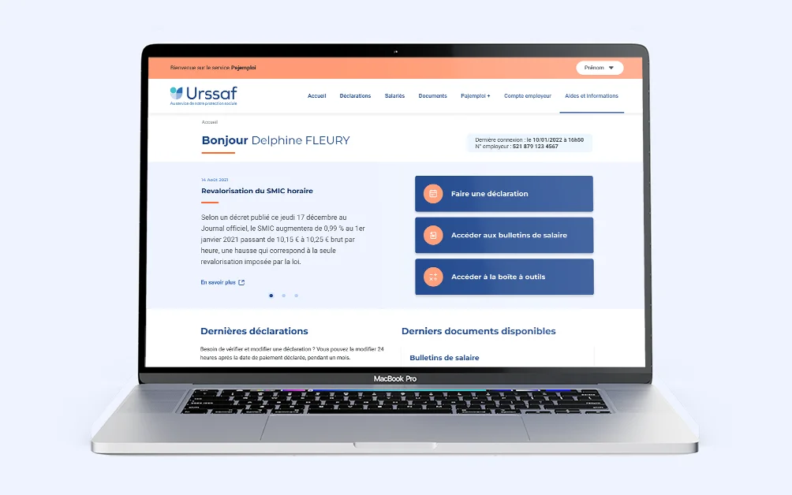
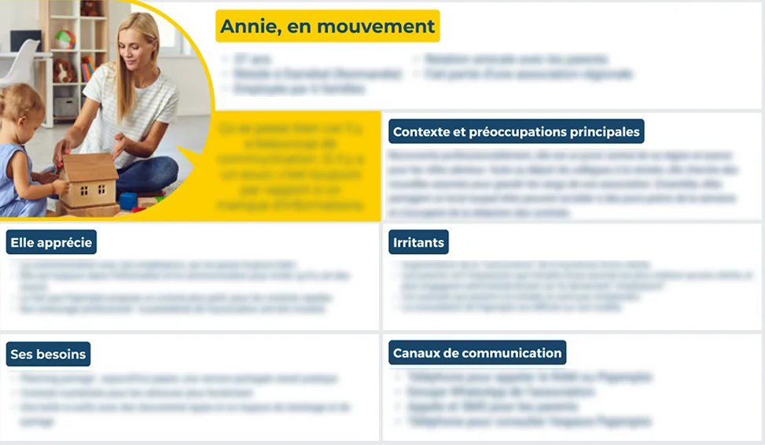
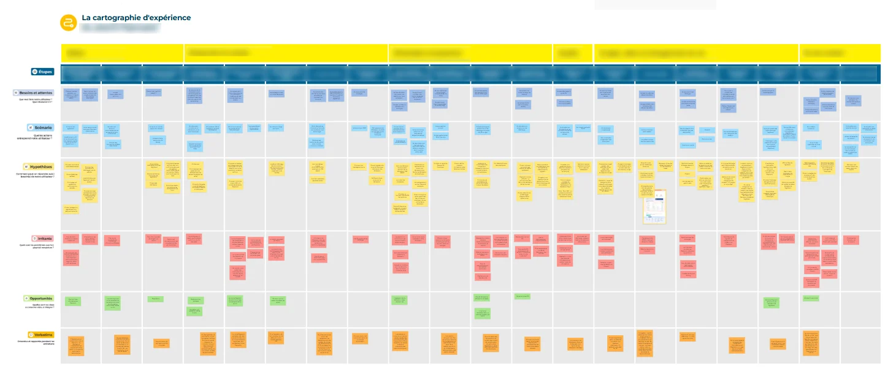
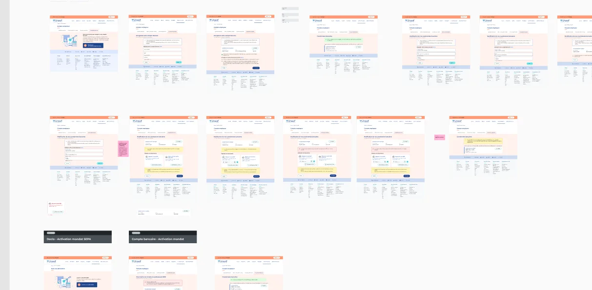
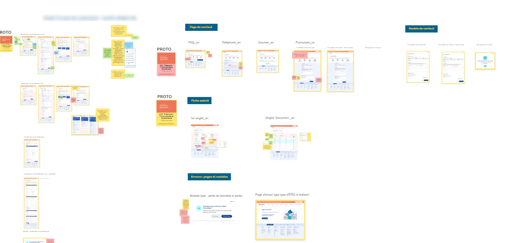
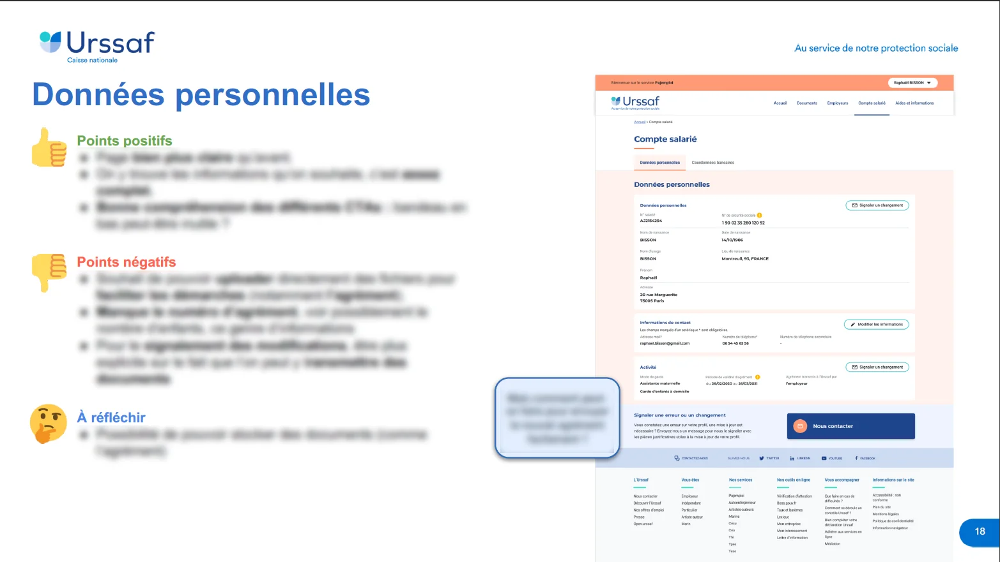

Contributing to the full redesign of Pajemploi's dual SaaS platform

Client context: A team of three (one Product Owner and two UX designers) was working on the Pajemploi redesign, but one of the designers needed to be replaced.
My role: I joined as Senior Product Designer, in a team made up of a dedicated Product Owner and a more senior UX designer. My role was to demonstrate my strengths in delivery quality and speed, while further building my skills on the discovery side.
- • Daily standup with the PO and the other UX designer, every day without fail
- • Business workshops 2-3 times a week as needed, together — when available — with the project team from the Operations Department
- • Weekly Design System sync with the whole design team (about ten designers)
- • Regular check-ins with the development team as needed (generally weekly), particularly to stay aligned on QA and digital accessibility. For each sprint, each designer worked on a different journey, which meant two journeys could move forward in parallel every 6 weeks — an approach set up to match the project's scale.
Organization: We worked in 6-week sprints, covering everything from discovery to development follow-up, including delivery, workshops and user testing:
UX research approach
Since Pajemploi is split into two distinct SaaS platforms — one for parent-employers and one for childminders (AssMat) or in-home childcare providers (GED) — we first needed to analyze users' real needs before studying their journeys.
By the time I joined the project, discovery for the parent-employer side had already been done. I was, however, able to work on the discovery for childminders.
- • Field research to understand users' different needs, notably through their comments on social media
- • Analyzing the tools these same users relied on (benchmarking), such as AssMat-facile
- • Writing a user questionnaire to run interviews, based on the first insights gathered
- • Conducting interviews with childminders and in-home childcare providers to understand their needs (and hear their concerns)
The process unfolded in several stages:
- • A list of 5 personas, to map out the different user types
- • An experience map, in particular to analyze every friction point across their complex journeys.
- • Then, in a co-design workshop with business teams, we built an impact/effort prioritization map to see what was feasible and within what timeframe.
- • Created a story map to analyze which features to build and how to prioritize them.
- • This led first to the platform's site map, to visualize navigation, and then to a diagram mapping out the different usage scenarios users could follow for a given journey.
Then, together with my fellow UX designer, we put together a number of deliverables:
Deliverables
- • 5 personas
- • An experience map
- • An Impact / Effort map
- • A story map
- • A site map
- • A scenario diagram
A single Klaxoon link gathering all the deliverables mentioned above:
A few examples of deliverables:


UX product approach
- • One week spent analyzing discovery findings to build the first screens using the design system (while also QA-testing developers' work from the previous sprint in parallel)
- • Then, reviewing the first screens with business teams in co-design workshops, so everyone could explain their choices and we could jointly decide what to keep, change, or iterate on. Each workshop used color-coded sticky notes so everyone agreed on outcomes: Green (OK), Orange (to address), Red (assumption), Orange (to test), Blue (business rule)
- • Prototyping the journeys in parallel, to better visualize interactions when needed (usually 2 weeks)
- • Getting the journeys validated by the project team on the Operations Department side.
- • Writing the user testing protocol to validate (or not) the decisions made in the workshops.
- • Running around ten user tests per journey (on average) to get a representative amount of feedback.
- • Producing a PPT report on the user test results, with a summary version and a more detailed one depending on stakeholders' needs
- • Presenting the document to all stakeholders and getting sign-off (or not) on the changes to make, proactively proposing solutions to friction points and championing the user's voice as much as possible.
- • Fixing the prototype and handing it off to developers
- • Following up on development while starting the next sprint.
For each sprint — 6 weeks, as a reminder — with each designer assigned a dedicated journey:
Deliverables
- • A Figma file with the different journey iterations, keeping a full history of changes
- • A Klaxoon link with the history of what was written and decided in each workshop
- • A test protocol (Excel file)
- • A test results report (PPT file)
- • A QA feedback document for developers (PPT or Figma, depending on needs)
For each sprint — 6 weeks, as a reminder — with each designer assigned a dedicated journey:
A few examples:



Results and impact
- • A full platform redesign delivered faster than expected
- • Strong satisfaction from the teams I worked with (including a LinkedIn recommendation from the PO)
Unfortunately, since the site only recently launched, there's no concrete user feedback yet on what was built afterward
Learnings
- • Working in real partnership with another designer and a Product Owner, within a more complex ecosystem than I'd known before (product team, project team, mid-sized UX team, business teams)
- • Discovering the real stakes of accessibility, and how to build interfaces that concretely address it
- • Writing test protocols, running the tests, and reporting on the results.
- • Leveling up on the discovery phase (my previous experience was more based on direct client requests or data)
A project? A need?
Let's talk.
If you're interested in my profile or would like to connect, I'd be happy to hear from you — via LinkedIn (new tab), or directly by email at benech.r(@)gmail.com. Looking forward to it!
To go back home, click here!